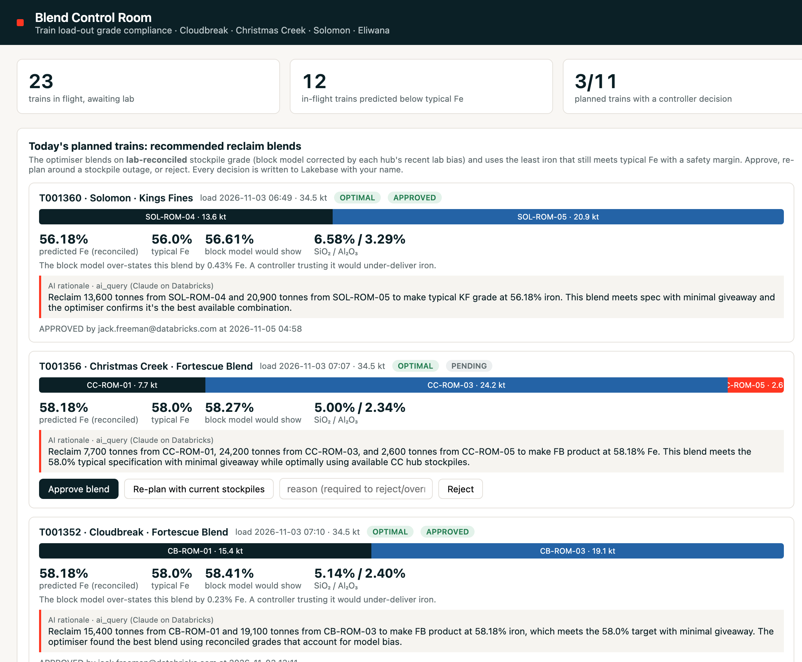

Know each train's lab grade when it leaves the load-out, and blend the next one on corrected stockpile grades.

Mean absolute error vs lab assay, % Fe. Lower is better.
Share of 131 below-typical trains flagged. Higher is better.
Simulated on 90 days of synthetic data with an illustrative penalty schedule. Trade-off: average train Fe rises 57.82% → 58.07%, so more high-grade ore is used at Solomon.